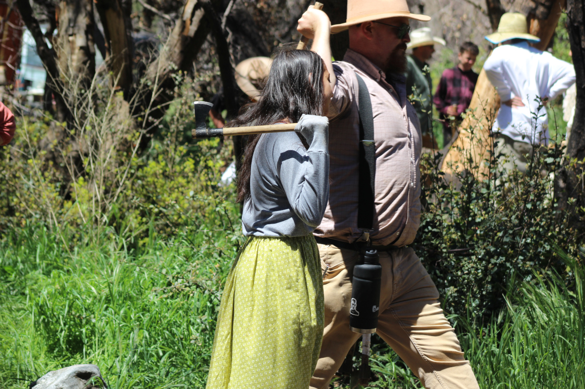
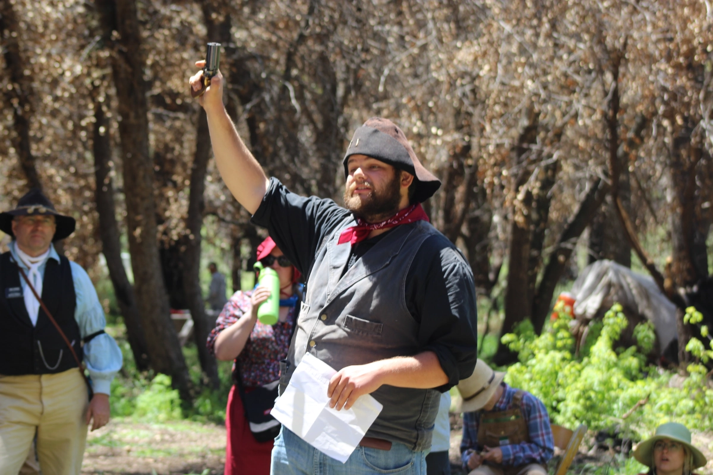
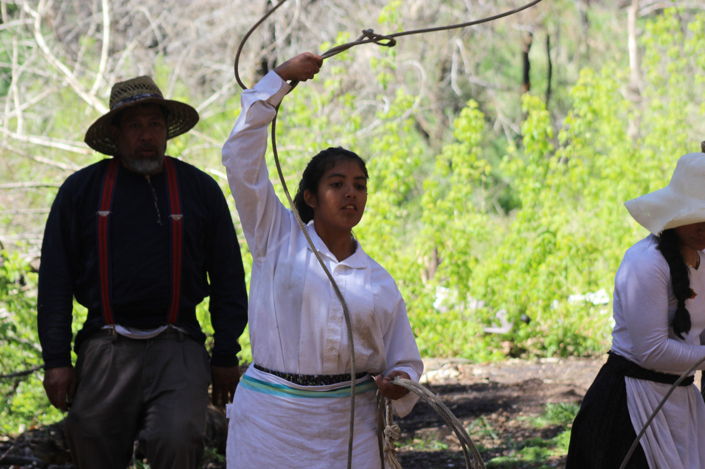
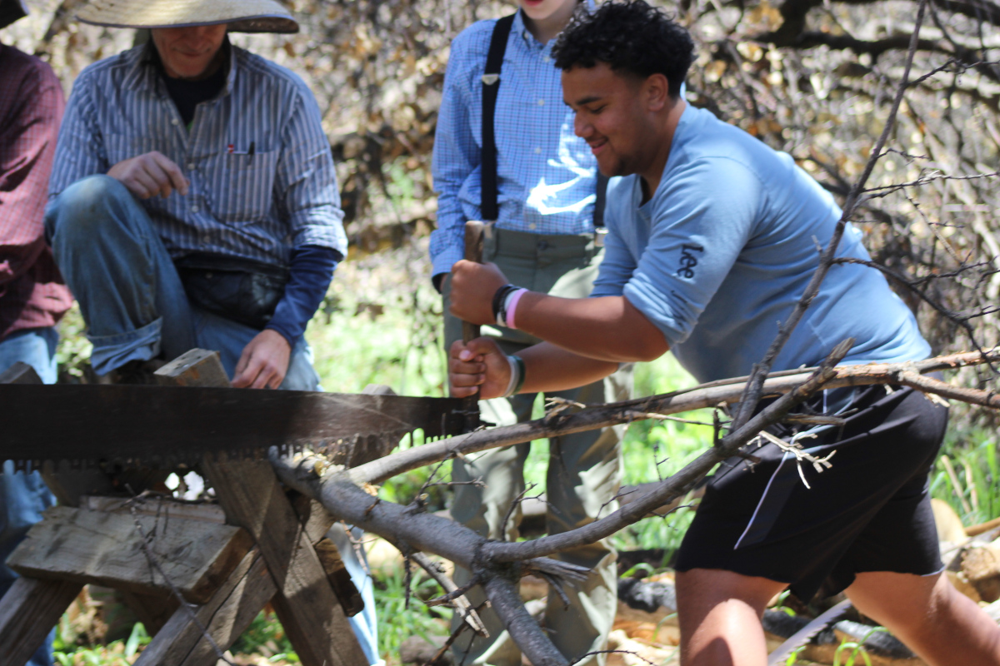
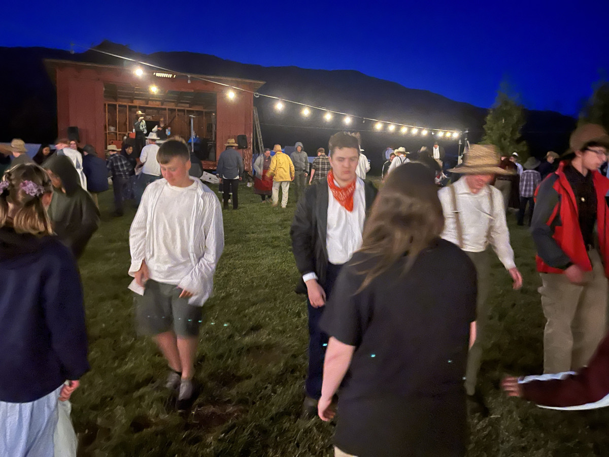
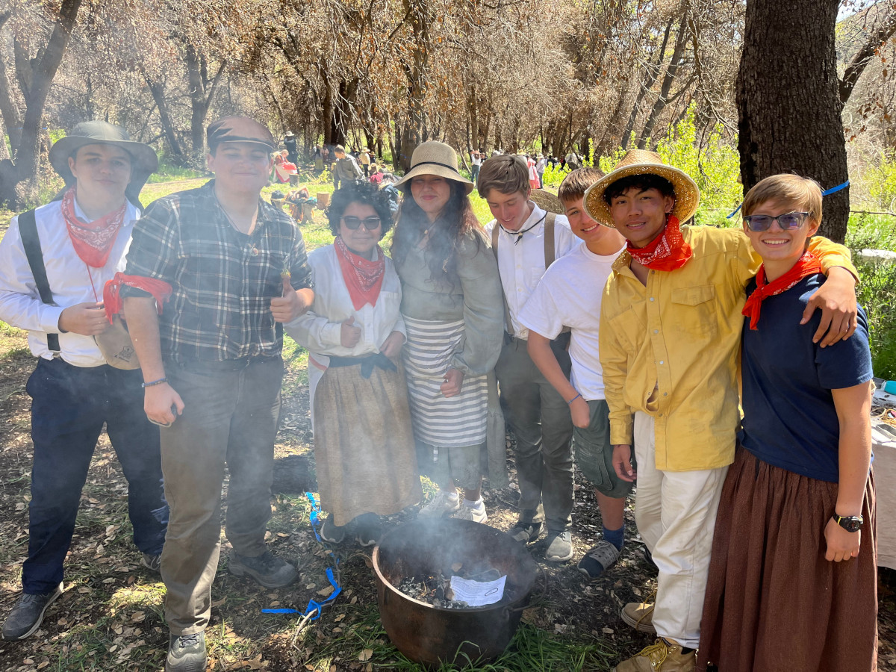
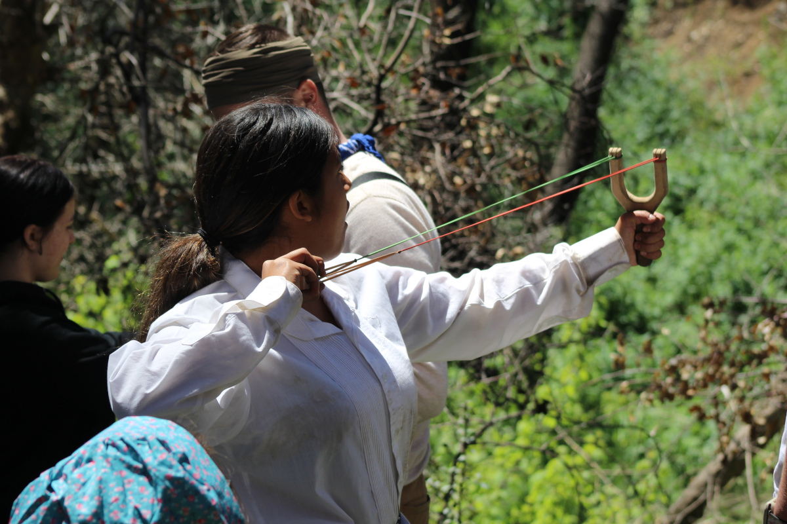

Here is a run down of some of the activities and skills the youth learned about and participated in doing
Hatchet throwing
The youth were shown the proper way to throw a hatchet into wood. Some did great and other need a lot more practice. This is not an easy skill to learn and do repeatedly.
Musket shooting
What is it like to shoot a musket gun? Well they had the opportunity to learn and shoot a target. Most were surprised at how loud the pistols are and how the gun recoils.
roping
They got the opportunity to practice roping a steer head. This is not as easy as it looks and it takes a lot of practice and determination to do correctly.
cutting wood with 2 man saw
Have you ever tried to cut a tree using a 2 man saw? These saws are long and heavy and do not cut as easy as you would expect. They take practice to get the timing down so that each person can pull the saw at the right time and get the logs cut.
Dance etiquette
This was an interesting activity in that the youth learned a few things about dance etiquette from the pioneer days. One such rule was that if a girl was asked to dance, they could not say no. If they did, they were done dancing for the night.
Fire starting with flint
Very few of the youth were able to actually start a fire using flint. Most of the youth were too scared to strike the flint and steel together hard enough to produce a spark. For a lot of them this was a scarry prospect.
Sling Shot
One of the activities that a lot of the youth and adult enjoyed was learning the correct way to shoot a sling shot. Sling shots back then did not have the stabilizing features that they have today. You had to learn to keep them straight using just your hands.
